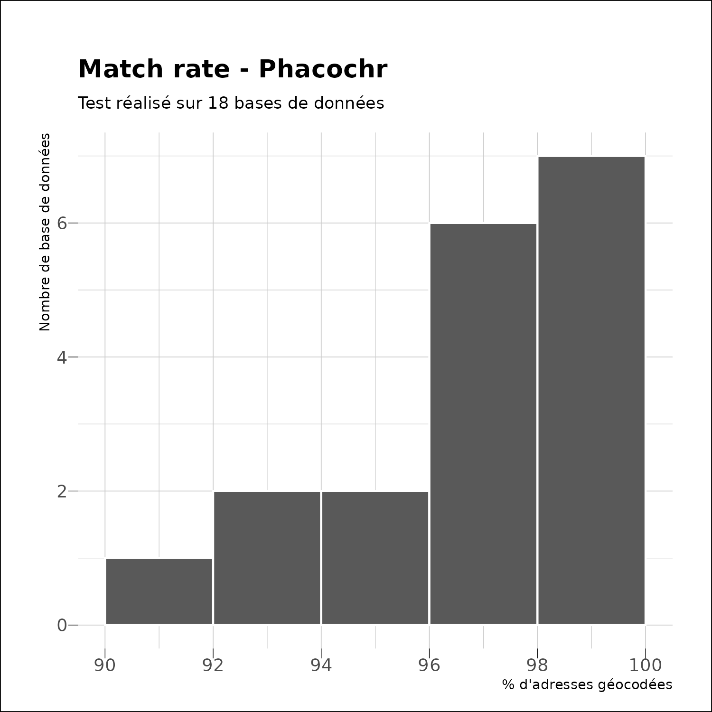
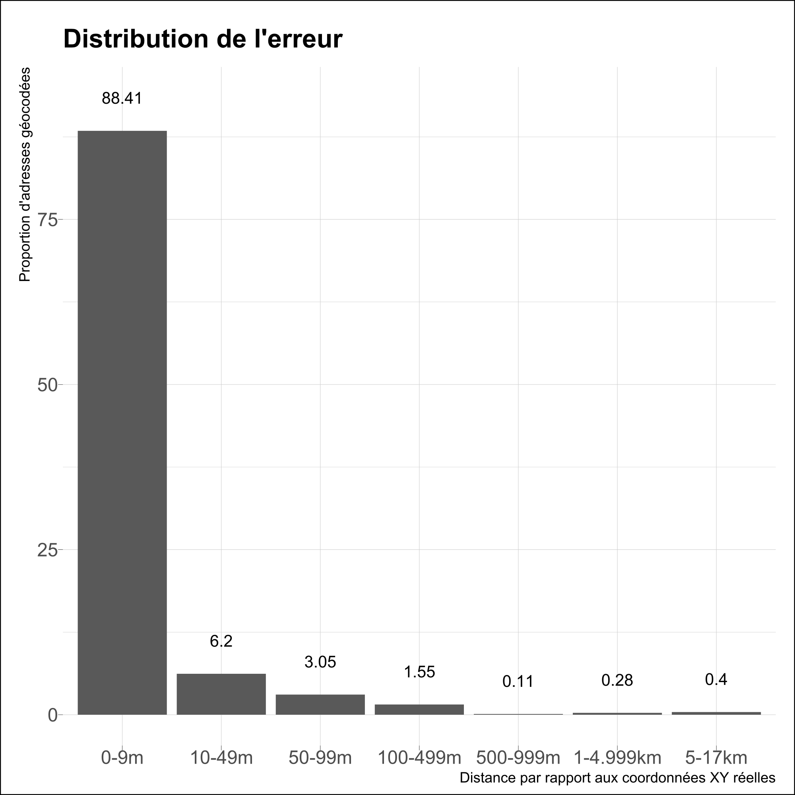

Performances
Nous présentons ici quelques mesures des performances de
phacochr. Nous avons réalisé des tests sur 18 bases de
données réelles fournies par des collègues (merci à elles et eux).
La vitesse d’exécution par adresse suit une fonction inverse (1/x).
phacochr est bien meilleur avec un nombre conséquent
d’adresses. Ceci vient entre autre du fait qu’il doit charger des
données volumineuses avant de réaliser les traitements : le “coût”
marginal en temps de ce chargement est d’autant plus faible que les
données sont nombreuses à géocoder. A partir de 2000 adresses, la
vitesse d’exécution se situe entre 0,4 et 0,8 secondes / 100 adresses
sur un PC de puissance moyenne. A titre d’exemple, sur ce même PC, 2
adresses sont trouvées en 16s, géocoder 300 adresses prend environ 20s,
1000 adresses 25s, 20 000 adresses 140s.

phacochr possède une bonne capacité à trouver les
adresses. Sur le même set de 18 bases de données, la médiane du
pourcentage d’adresses trouvées est de 97%. Pour 7 bases de données sur
les 18, phacochr trouve les coordonnées à plus de 98%, pour
6 bases de données entre 96% et 98% et pour 5 bases de données entre 90%
et 96%.

Fiabilité
Pour mesurer la fiabilité de phacochr, Nous avons mesuré
la distance (euclidienne, en mètres) entre la géolocalisation
opérée par phacochr avec ses réglages par défaut et les
coordonnées spatiales déjà présentes dans deux bases de données : celle
des écoles néérlandophones et celle des pharmacies, les deux pour toute
la Belgique. Cette distance peut être interprétée comme l’erreur
dans la géolocalisation (bien qu’il est possible que les
coordonnées déjà présentes dans ces deux bases de données ne soient pas
précises : nous n’avons pas investigué la manière dont elles ont été
produites). Le tableau suivant montre la répartition en pourcentages de
cette erreur par classe de distance. On voit ainsi que 97,6% des
adresses géocodées sont localisées à moins de 100m de leurs coordonnées
“réelles”, montrant un degré de fiabilité tout à fait satisfaisant.
